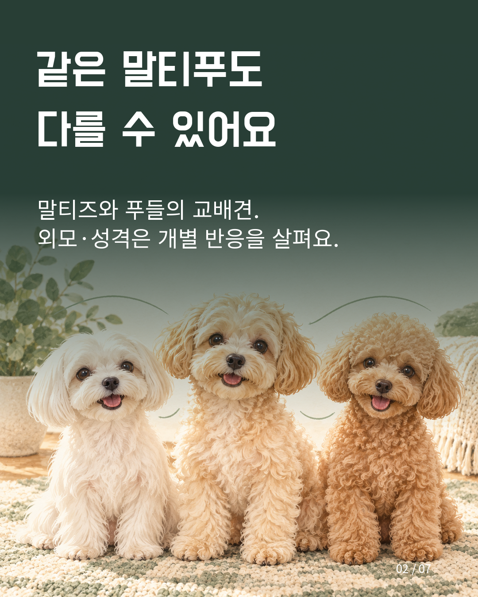
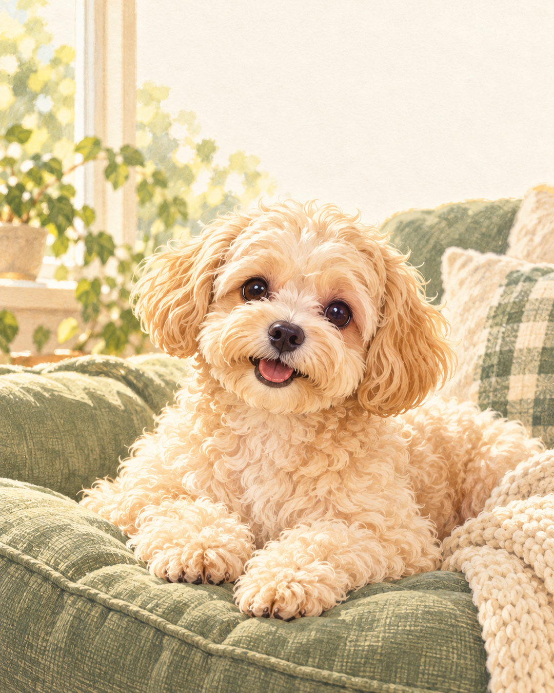
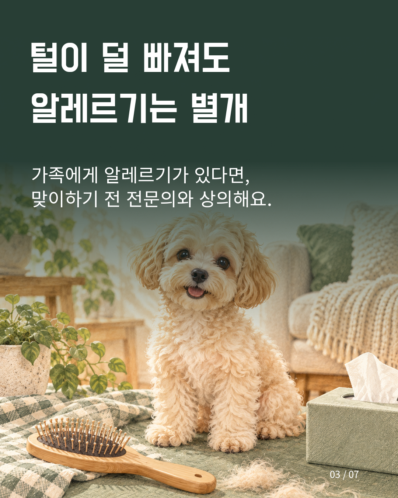
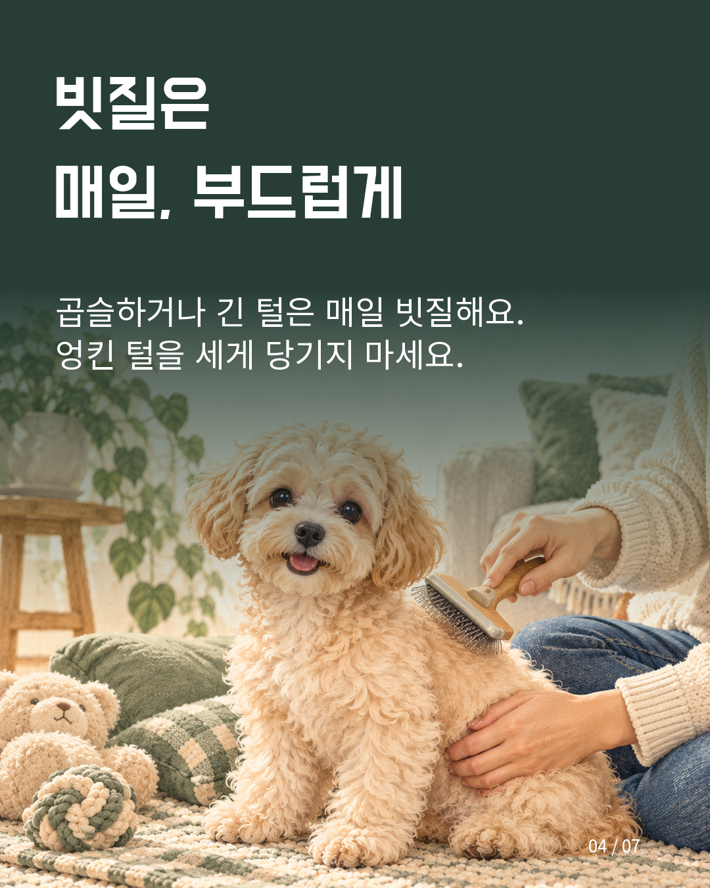
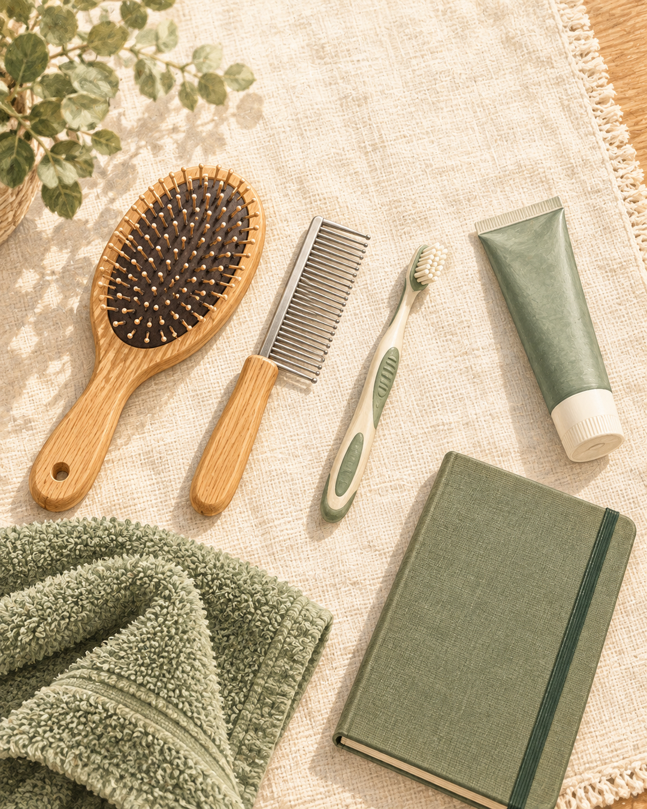
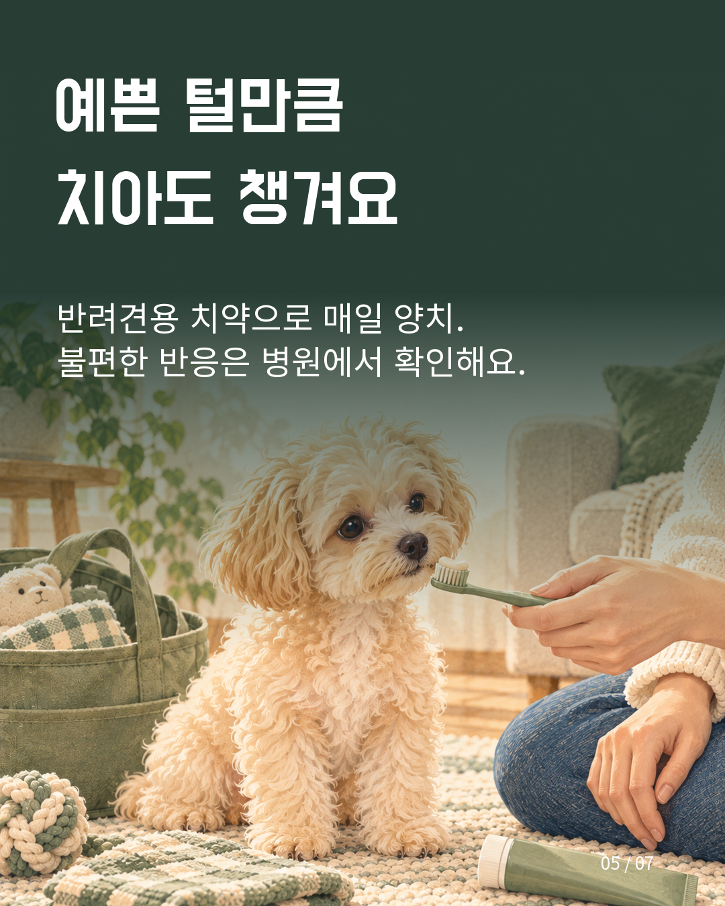
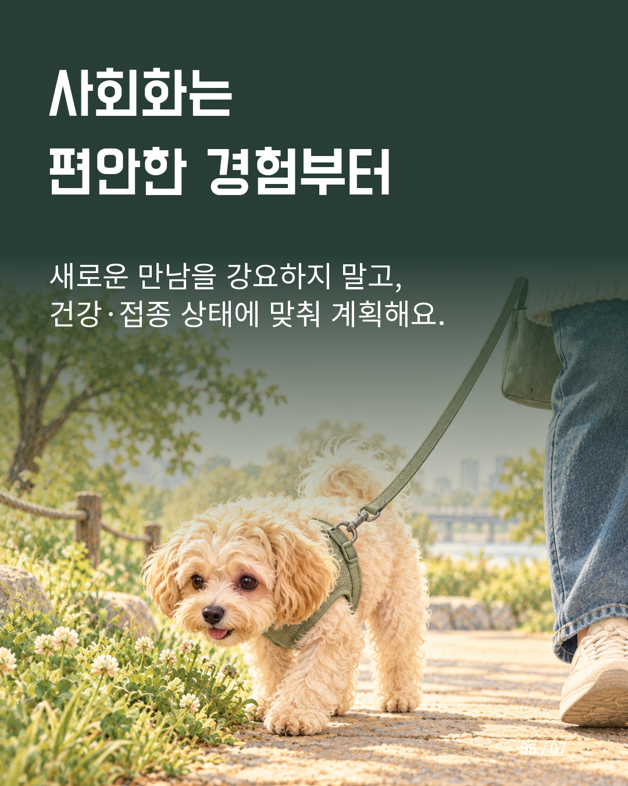
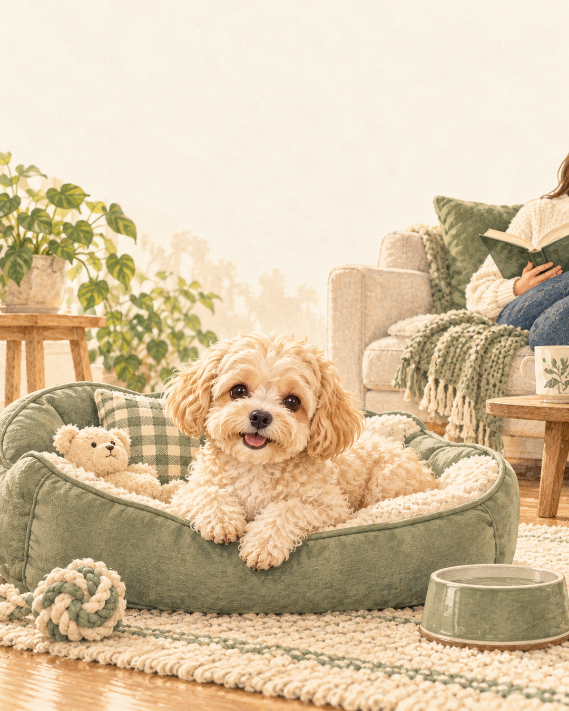
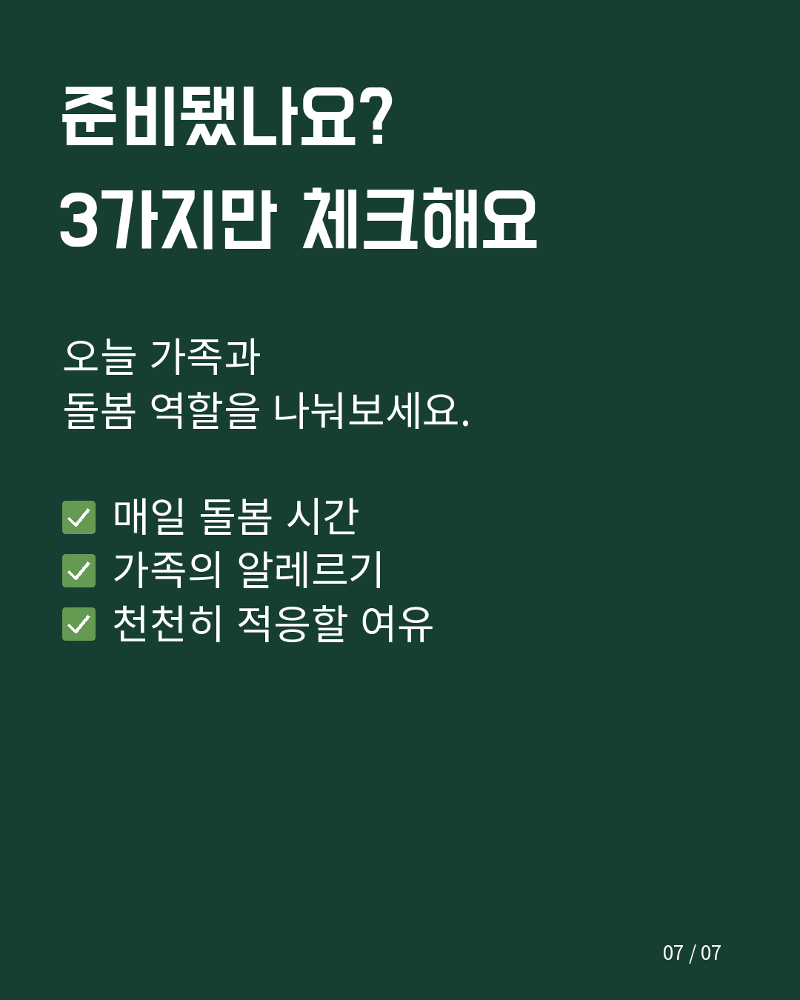

말티푸를 알아볼 때는 동그란 얼굴이나 복슬복슬한 털에 먼저 눈길이 가기 쉬워요. 하지만 함께 사는 생활은 사진 한 장으로 결정하기 어렵습니다. 털을 관리할 시간, 가족의 알레르기, 새로운 환경에 적응하도록 도울 여유까지 함께 살펴보는 편이 좋아요.
처음 돌보는 분이 자주 궁금해하는 특징과 생활 준비를 여섯 가지로 정리했어요. 품종 이름만으로 성격이나 건강을 단정하기보다, 눈앞의 강아지에게 맞는 돌봄을 생각해 보는 입문 안내입니다. 전문학회와 수의학 안내를 참고했으며, 직접 키운 경험을 바탕으로 한 후기는 아니에요.
말티푸는 말티즈와 토이 또는 미니어처 푸들의 교배견을 가리키는 이름이에요. 다만 같은 이름으로 불리는 아이들도 털 모양이나 외모가 서로 다를 수 있습니다. 인터넷 사진이나 짧은 소개만 보고 성견의 모습까지 똑같을 거라고 기대하지 않는 편이 좋아요.
성격을 살필 때도 ‘작으니까 조용할 것’이라는 추측보다 실제 반응을 관찰해 보세요. 낯선 소리에 어떻게 반응하는지, 사람과 거리를 조절할 수 있는지, 새로운 공간에서 편안해지는 데 시간이 필요한지를 메모해 두면 돌봄 계획을 세우는 데 도움이 됩니다. 다른 집의 사례를 우리 집 강아지에게 그대로 적용할 필요는 없어요.


털이 적게 빠지는 특징을 기대하더라도 알레르기가 생기지 않는다는 뜻은 아니에요. 사람의 반려동물 알레르기에는 비듬이나 침 등에 포함된 단백질이 관여할 수 있습니다. 미국 알레르기·천식·면역학회도 알레르기 반응이 없는 견종을 보장할 수 없다고 안내해요.
가족에게 기존 알레르기가 있다면 외모나 털 상태만으로 괜찮다고 판단하지 말고 전문의와 먼저 상의해 보세요. 잠깐 만났을 때 증상이 없었다는 이유만으로 이후의 생활까지 예측하기는 어렵습니다. 가족의 건강을 확인하는 과정과 반려견을 맞이할 준비를 함께 생각해 주세요.

길거나 곱슬한 털은 엉키지 않도록 꾸준히 관리해야 해요. VCA의 털 관리 안내는 이런 털에 매일 빗질하는 습관을 권합니다. 털 빠짐이 적다고 관리할 일까지 적어지는 것은 아니므로, 바쁜 날에도 돌봄 시간을 낼 수 있을지 미리 생각해 보세요.
처음에는 빗을 보여주고 냄새를 맡게 하는 등 편안하게 받아들이는 단계부터 시작해 보세요. 엉킨 털을 세게 잡아당기거나 오래 붙잡고 한 번에 끝내려 하지 않는 것이 좋아요. 브러시 종류와 미용 간격은 털 길이와 상태를 보고 미용사나 수의사에게 물어보면 됩니다. 모든 아이에게 같은 미용 주기나 비용을 정해 두기는 어려워요.


빗질만큼 구강 관리도 일상에 넣어 주세요. 반려견용 치약을 사용하는 매일의 양치는 치태 관리에 도움이 된다고 VCA는 설명합니다. 사람용 제품을 임의로 사용하기보다 강아지에게 맞는 도구와 적응 방법을 병원에서 확인해 보세요.
처음부터 입 안 전체를 오래 닦으려 하기보다 도구와 접촉을 편안하게 받아들이는 연습이 필요해요. 이미 굳어진 치석이 있거나 입을 만질 때 불편해한다면 집에서 억지로 해결하려 하지 말고 진료를 받아 주세요. 첫 상담 때는 구강 상태와 집에서 할 관리, 다시 확인할 시점을 질문 목록으로 준비하면 좋습니다.

사회화는 낯선 사람과 강아지를 많이 만나게 하는 횟수 경쟁이 아니에요. 새로운 소리나 장소를 편안하게 받아들이도록 돕는 과정으로 생각해 주세요. 강아지가 차분하게 살펴볼 수 있는 거리에서 시작하고, 무서워하거나 피하려 하면 거리를 넓혀 쉬는 편이 좋습니다.
한 번에 여러 자극을 더하기보다 반응을 보며 천천히 진행해 보세요. 사람에게 다가가도록 밀거나 다른 개에게 억지로 인사시키지 않아도 됩니다. 어린 강아지의 외출이나 사회화 수업은 예방접종과 건강 상태, 장소의 안전 조건을 확인해 수의사와 계획해 주세요. 다른 집의 일정이 우리 아이에게도 맞는다고 단정하지 않는 것이 중요해요.


마지막으로 필요한 물건보다 생활 시간을 먼저 적어 보세요. 매일 빗질과 양치를 도울 사람은 누구인지, 낯선 경험에 적응할 때 기다려 줄 여유가 있는지, 가족의 알레르기는 확인했는지를 함께 이야기해 보는 거예요.
준비 목록에는 정답을 쓰기보다 아직 모르는 점을 남겨도 괜찮아요. ‘우리 집에 맞는 빗은 무엇일까’, ‘양치는 어떻게 시작할까’처럼 질문으로 정리하면 전문가에게 구체적으로 물어볼 수 있습니다. 고정된 양육비 숫자보다 우리 지역의 미용·진료 안내를 직접 확인해 예산을 세우는 편이 현실적이에요.
예를 들어 주중에 돌봄을 맡을 사람과 늦게 귀가하는 날 대신 도울 사람을 나눠 적어 보세요. 평소 문의할 병원과 쉬는 날에도 연락할 곳을 찾아 두고, 질문을 메모할 공용 노트를 준비하는 방식도 생각해 볼 수 있어요. 이 목록은 모든 가정에 똑같이 적용하는 규칙이 아니라, 가족이 역할과 여유를 이야기하기 위한 제안입니다.

말티푸를 잘 알아간다는 것은 귀여운 특징을 외우는 일보다 매일의 돌봄을 상상해 보는 일에 가까워요. 오늘의 여섯 가지 중 우리 집에서 준비된 부분과 더 확인할 부분을 나눠 적어 보세요. 강아지의 개별 상태를 살피면서 생활에 맞는 방법을 하나씩 찾아가는 출발점이 될 수 있습니다.
자료를 참고해 작성한 보호자용 일반 정보입니다. 개별 반려견의 건강 판단은 수의사와 상담해 주세요. 이미지는 AI로 제작한 설명용 이미지이며 실제 양육 사진이 아닙니다.
#말티푸 #말티푸특징 #말티푸관리 #초보견주 #강아지돌봄 #강아지빗질 #강아지양치 #강아지사회화